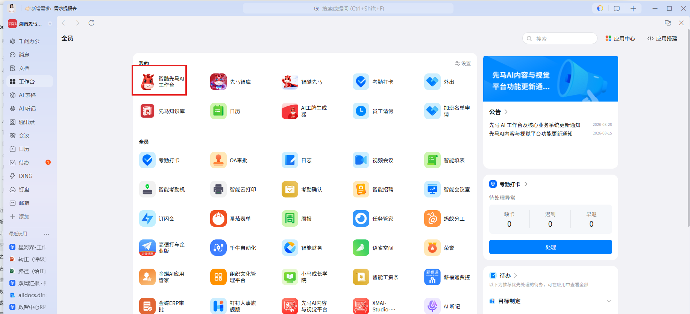
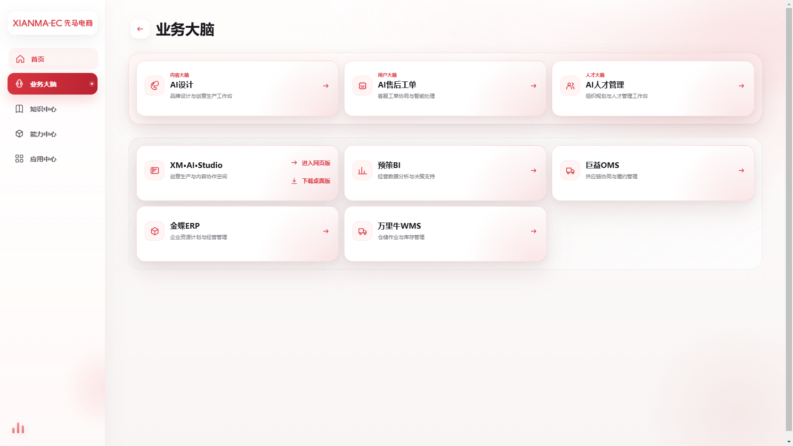
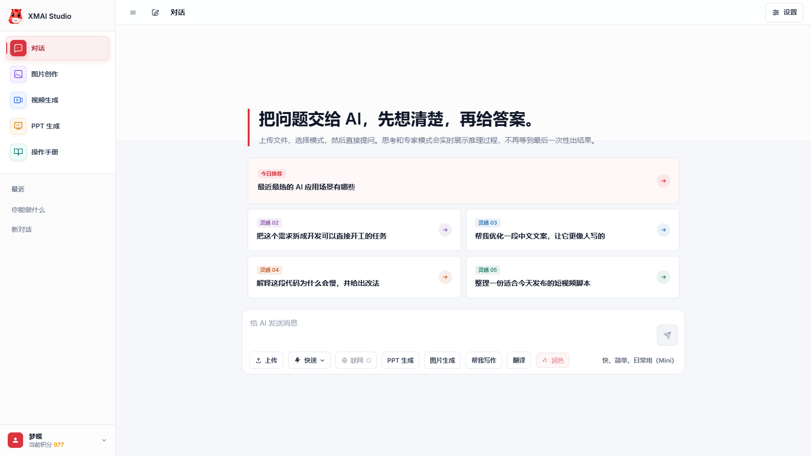
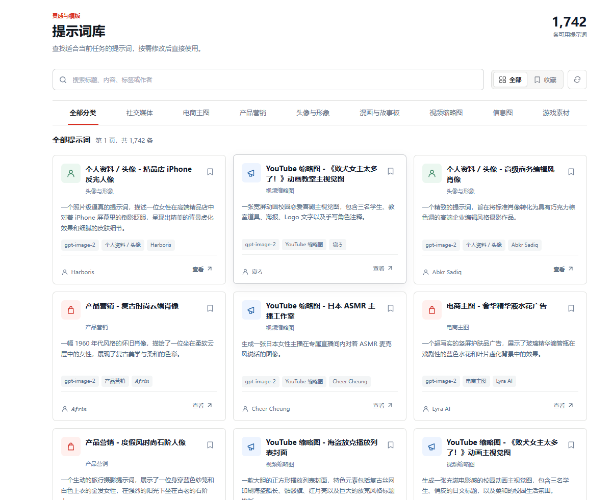
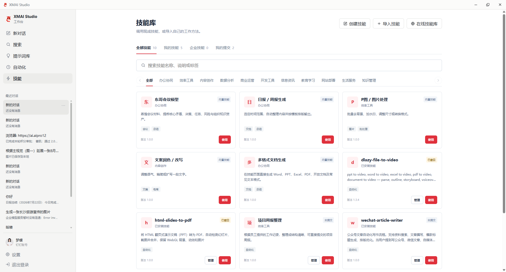
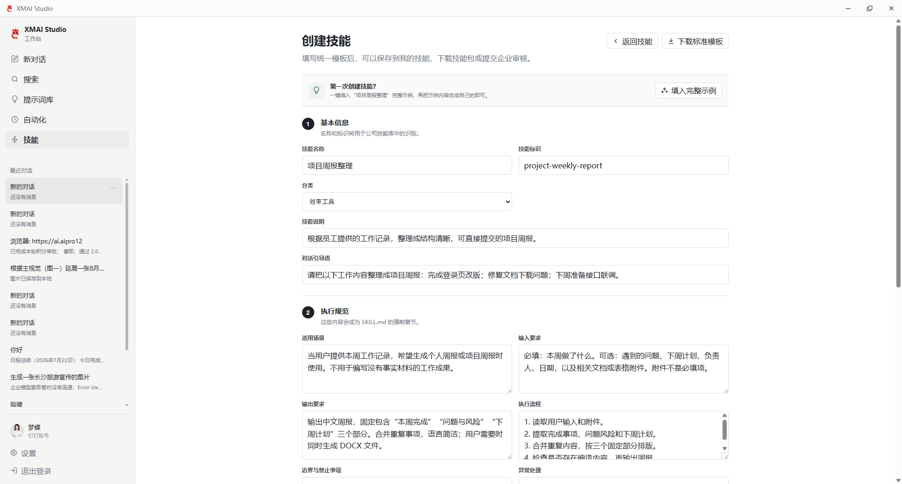
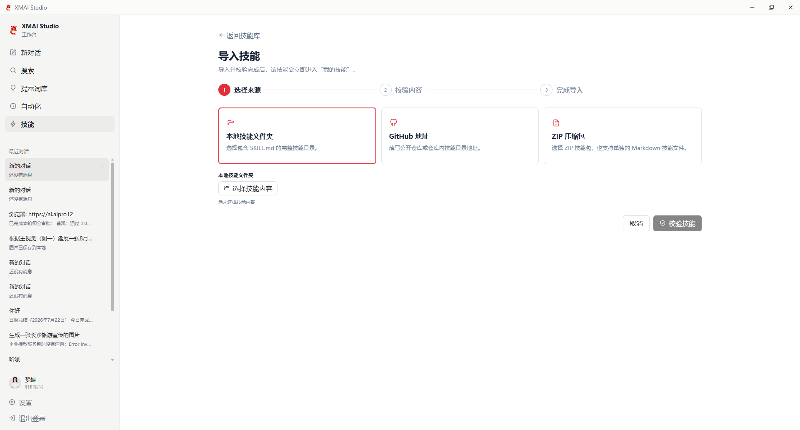
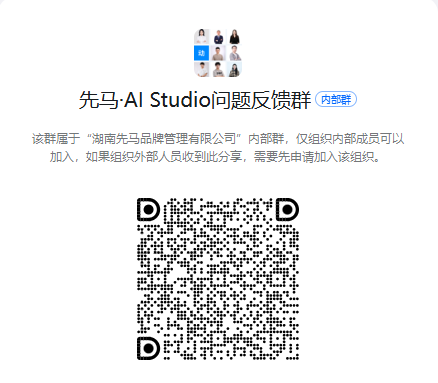

从高频工作开始
优先选择日报周报、会议纪要、文案整理、信息汇总等重复性高、风险可控的任务。
本课程面向全体员工，先讲清楚各平台入口和使用选择，再通过提示词库、技能库和真实办公案例，带大家完成一次从使用到沉淀的完整闭环。
建议采用“短讲解 + 屏幕演示 + 课后行动”的视频结构，先让员工知道去哪，再让员工完成一次真实任务。
| 章节 | 建议时长 | 核心内容 | 建议演示 |
|---|---|---|---|
| 1. 开场：为什么全员要使用先马 AI 平台 | 2 分钟 | 公司级平台定位；从个人尝鲜转向岗位提效和企业资产沉淀 | 展示平台整体能力和使用价值 |
| 2. 平台定位与使用选择 | 4 分钟 | 区分钉钉工作台中的智酷先马 AI 工作台、AI Studio 网页版和桌面版；说明什么情况下选什么 | 展示平台关系图和选型表 |
| 3. 全部平台入口、域名与下载安装 | 4 分钟 | 以钉钉工作台为核心入口，介绍各平台域名、网址收藏、应用端下载安装与登录 | 从钉钉进入 AI 工作台，展示业务大脑中的平台入口并安装 AI Studio |
| 4. 提示词库高效使用 | 4 分钟 | 提示词的搜索、筛选、收藏、复制、使用和个人沉淀 | 以日报周报、会议纪要或文案整理为例 |
| 5. 技能库高效使用 | 5 分钟 | 提示词与技能的区别；个人技能与企业技能；技能查找、调用和复用 | 演示选择技能、补充任务、执行并查看结果 |
| 6. 从个人使用到企业 AI 资产 | 3 分钟 | 个人验证、优化、提交、审批、企业发布和员工复用 | 演示个人提示词或技能提交企业沉淀 |
| 7. 使用要求、晾晒通报与问题反馈 | 2 分钟 | 持续使用要求；部门使用和资产贡献晾晒；反馈格式与安全边界 | 展示反馈入口和标准问题反馈 |
| 8. 结尾：“三个一”行动 | 1 分钟 | 进入一次、完成一次、沉淀一次 | 展示培训后的行动清单 |
开场先建立共识：AI 不是一次性体验，而是进入岗位流程、形成可复用资产的工作基础设施。
优先选择日报周报、会议纪要、文案整理、信息汇总等重复性高、风险可控的任务。
把个人验证有效的做法整理成提示词、技能或模板，降低其他同事的重复试错成本。
平台不仅提供对话入口，也承载企业知识、技能、提示词和业务能力的持续沉淀。
这一章解决“我应该打开哪个平台”的问题：钉钉工作台是统一入口，智酷先马 AI 工作台负责导航，AI Studio 负责完成 AI 任务，专业平台负责具体业务。
核心入口：钉钉工作台 → 工作台应用
备用网址：https://agent.xianmaec.com本次培训的核心入口。进入后可从业务大脑、知识中心、能力中心和应用中心找到对应平台；也可使用备用网址访问。
https://xmai.xianmaec.com从 AI 工作台的 XM·AI Studio 卡片点击“进入网页版”。适合文档、图片和日常工作。
智酷先马 AI 工作台 → 下载从 AI 工作台下载并安装。创建技能、导入技能和浏览器自动化需要使用桌面版。
https://yf.xianmaec.com售后评价、工单处理与客服协同。
https://cv.xianmaec.com图片、文案、视觉内容、提示词和素材相关工作。
https://xmrcpd.xianmaec.com人才管理及相关人事业务。
这一章要让员工能独立完成第一次进入和安装。
打开钉钉，进入左侧“工作台”，找到并打开“智酷先马 AI 工作台”。
在 AI 工作台的业务大脑或应用中心，选择 XM·AI Studio：日常文档、图片和基础工作点击“进入网页版”；创建技能、导入技能和浏览器自动化点击“下载桌面版”。
如需备用访问，可打开 https://agent.xianmaec.com，通过钉钉授权登录。
完成桌面版安装和登录后，将钉钉工作台、AI 工作台和常用平台收藏到便于访问的位置。



提示词解决“怎么说”，重点是学会找到可复用模板，并根据自己的任务补齐背景和要求。

角色、任务目标、背景信息、输入材料、处理要求、输出格式和质量标准。
组合使用任务词、岗位词、输出词和结果词，例如“运营 + 周报 + 表格 + 总结”。
任务重复出现、输入稳定、输出明确、结果经过验证且其他同事也可能使用。
在提示词库搜索“周报生成”或“工作总结”。
查看适用场景，选择、复制或收藏合适提示词。
补充岗位、时间范围、工作记录和输出格式。
执行后检查是否遗漏事实、虚构数据或改变原意。
将验证有效的版本保存为个人提示词，后续继续优化。
技能解决“怎么做”，适合沉淀固定步骤、输入要求、处理规则和结果交付方式。
个人导入或整理，先供本人验证和使用。
经过审核发布，供其他员工搜索和复用。
先确认适用场景；涉及外部系统写入、发送和变更时进行人工确认。

进入技能库，按场景或关键词搜索技能。
查看技能简介、适用范围、输入要求和来源状态。
点击“使用”，补充任务描述和必要材料，执行后查看结果。

填写技能名称、技能标识、分类和技能说明。
补充适用场景、输入要求、输出要求、执行流程和异常处理。
使用示例或完整示例快速填充，再替换为自己的岗位场景。

选择本地技能文件夹、公开 GitHub 地址或 ZIP 压缩包。
确认技能包包含可识别的 SKILL.md，并通过兼容性和安全校验。
校验通过后进入“我的技能”，先由本人验证，再决定是否提交企业审核。
个人使用不是终点，经过验证的方法才有机会成为团队和公司的复用能力。
高频重复、步骤稳定、输出标准清晰、已实际验证、能帮助其他同事提效的方法。
名称、适用岗位、输入材料、输出结果、敏感信息、人工确认和失败处理是否清楚。
每一次有效使用都在帮助公司积累可复用的方法、技能和经验。
把使用变成日常习惯，同时让使用结果和资产贡献可被持续观察。
完成安装或登录，从岗位高频任务开始，持续验证并沉淀可复用方法。
可关注有效任务、重复使用、企业技能复用和资产提交/审批通过情况，最终以人力资源部制定并发布的规则为准。
通过钉钉群“先马·AI Studio 项目问题反馈群”反馈，并提供页面截图、问题描述、操作步骤、期望结果和实际结果。

课程结束不以“看完视频”为完成标准，而以一次真实使用和一次资产沉淀作为行动起点。
从钉钉工作台打开智酷先马 AI 工作台，完成 AI Studio 登录或安装。
使用一个提示词或技能完成真实岗位任务。
保存一条个人提示词，或整理一个可复用技能候选。